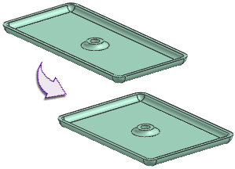

Estimated time to complete: 15–20 minutes
This project is designed so that you can complete it on your own by doing some exploring. Tips are provided if you need additional help.
In this project, you will modify expressions to position a hole.

Launch the Reposition a hole in a cover plate activity.